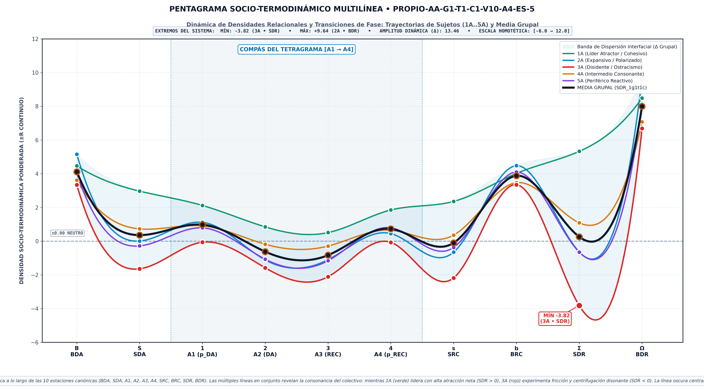
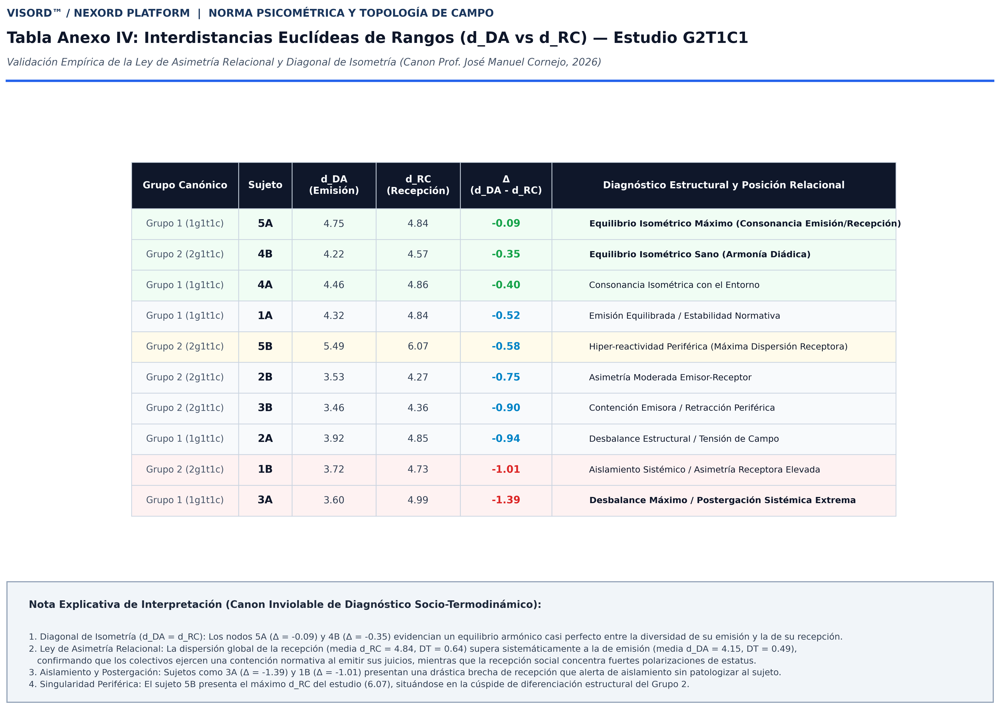

SOCIOMETRÍA ORDINAL COMPUTACIONAL Y DIAGNÓSTICO SOCIO-TERMODINÁMICO (PLATAFORMA NEXORD)
Manifiesto Científico, Fundamentación Teórico-Metodológica y Propuesta de Gobernanza en Ciencia Abierta
«Hacia una Física de lo Grupal_JMC»
Edición Canónica Homologada v8.0 (2026)
Autor: Dr. José Manuel Cornejo Álvarez
Filiación Académica: Titular de Psicología Social (Jubilado) · Facultat de Psicologia, Universitat de Barcelona (UB)
Rol en la Iniciativa: Creador de la Plataforma NEXORD y Promotor Científico de la iniciativa del Banco Sociométrico (BSOC)
Concept DOI (Zenodo / CERN): 10.5281/zenodo.18926396
DOI de Edición Homologada: 10.5281/zenodo.18941691
Página Web Oficial y Plataforma Interactiva: https://josemancor.github.io/nex-ord-web/
Repositorio Oficial y Código Fuente: https://github.com/josemancor/nex-ord-web
Ecosistema Maestro: VISORD 3D/4D (Visualizador Sociométrico Ordinal)
Idiomas Soportados por la Plataforma NEXORD: Español (ES), English (EN), Français (FR), Deutsch (DE), Italiano (IT), Português (PT), Русский (RU), 中文 (ZH).
Resumen
La Sociometría Ordinal Computacional NEXORD es, en lo esencial, una extensión actualizada de las intuiciones de Jacob Levy Moreno, creador de la Sociometría, y de Kurt Lewin, de la teoría del campo, dos grandes de la Psicología Social. Históricamente, la investigación en Psicología de los grupos ha estado condicionada por las limitaciones metodológicas y técnicas propias de la época en las que surgieron. Este Manifiesto parte de:
1) La consideración del ‘vínculo relacional’, producto de la interacción humana, como núcleo que constituye la realidad existencial de los grupos. ‘Dar y Recibir’ son los pares de fuerza indisociables que mantienen el necesario intercambio dialéctico de afectos, ideas, intenciones, recursos y acciones para el logro de objetivos comunes. Del equilibrio homeostático permanente que se establece entre los intercambios interpersonales de aceptación y/o conflicto depende la salud personal y grupal, su bienestar, éxito y viabilidad, a corto y medio plazo.
2) La cuantificación más precisa del orden relacional preferencial, con la aplicación de la función inversa al rango y los desarrollos teóricos, metodológicos y tecnológicos actuales están en la génesis de NEXORD, como plataforma general de investigación psicosocial sociométrica, con el propósito de intentar dar forma a las intuiciones que Moreno y Lewin no pudieron desarrollar en su época.
3) La métrica continua, fruto de esta cuantificación, se articula formalmente, mediante álgebra matricial y tensorial, en el tetragrama relacional de raíz moreniana ($E, R, pE, pR$) en $3^4 = 81$ figuras diádicas operativas mediante la dualidad de matrices SMIb/SMIa que transforma la micro-interacción subjetiva en topología computable.
4) La articulación de las 4 densidades elementales y su extensión a 18 densidades relacionales derivadas (espacio 18D) a partir de la retícula Q81, que cuantifican la masa y el flujo de los intercambios. Este gradiente permite modelar el colectivo como un sistema socio-termodinámico regido por estados de equilibrio y fricción relacional (Φ), donde la discrepancia dialéctica actúa como condición necesaria de salud y adaptabilidad frente a la entropía del pensamiento grupal (Groupthink).
5) La proyección simultánea en espacios factoriales duales (AFC $∥$ PCA), donde los actores emergen no como puntos estáticos, sino como dipolos cinemáticos diádicos ($DA ⟶ RECIBE$) cuyo centroide equilibra analíticamente la emisión y la recepción. Esta formulación revela la dominancia gravitatoria del eje relacional principal (PC1 ≫ PC2) y permite la comparación geométrica de estructuras grupales mediante variedades de Grassmann $\operatorname{Gr}(k, N)$.
6) La versatilidad del diseño multidimensional ($G × T × C$), que permite realizar comparaciones integradas (intra e inter grupales): transversales, longitudinales y criteriales. Esta arquitectura se potencia con los módulos de visualización interactiva VISORD, que facilitan la monitorización de las estructuras y procesos sociométricos resultantes de los análisis.
7) El compromiso ético efectivo de NEXORD con un uso estrictamente constructivo y no punitivo de la sociometría: asegurando por diseño (Privacy by Design) la salvaguardia absoluta de la privacidad. Este marco exige la tutela institucional y el compromiso deontológico explícito del Investigador Principal (IP) como único interlocutor acreditado, todo ello bajo los estándares de Ciencia Abierta.
Palabras clave: Plataforma NEXORD, VISORD, Sociometría Ordinal Computacional, Sociometría Preventiva, Formato Breve, Función Inversa al Rango, Densidades Relacionales (18D), Metapercepción, Planos Factoriales Duales, Variedades de Grassmann, Pensamiento Grupal, Ostracismo, Ética por Diseño, Ciencia Abierta.
1. Fundamentación Epistemológica
1.1. Superación del Límite Clásico y la Ontología del Vínculo
El propósito de NEXORD es actualizar metodológicamente la tradición de la psicología social: trasladar al plano computacional las intuiciones que ni Jacob L. Moreno ni Kurt Lewin pudieron implementar con el instrumental técnico de su época. Moreno formalizó el concepto de átomo social, pero el cálculo manual limitó la sociometría a cuotas binarias fijas (típicamente tres elecciones y tres rechazos). Lewin conceptualizó la teoría del campo psicológico y la topología social, pero careció de operadores matemáticos continuos para cuantificar distancias relacionales sin distorsionar la naturaleza psicológica del vínculo. NEXORD sitúa la interacción relacional activa en el núcleo ontológico de la vida grupal: el grupo no es un agregado estático de individuos, sino un campo dinámico de fuerzas en continua configuración. Asimismo, como anclaje analógico y apoyo conceptual al postulado de una Física de lo Grupal, la formulación sintoniza con la intuición de Nikola Tesla («si deseas comprender el universo, piensa en términos de energía, frecuencia y vibración»): los vínculos humanos se abordan no como categorías inertes o sumatorios discretos, sino como estados dinámicos de energía, gradientes de intercambio y patrones oscilatorios en un campo continuo.
1.2. Cuantificación del Orden mediante la Función Inversa al Rango
El mecanismo que posibilita el paso a una métrica continua es la cuantificación rigurosa del orden jerárquico mediante la función inversa al rango:

donde r_ij en {1, 2, ..., N} representa el rango ordinal estricto que el emisor i asigna al receptor j, y gamma > 0 modula la tasa de apertura y decaimiento relacional del campo. Esta formulación traduce la ordenación cualitativa en magnitudes relacionales continuas, permitiendo tratar el vínculo diádico como una fuerza medible y proyectable en espacios multidimensionales. Este principio formal converge armónicamente con los modelos estadísticos para datos relacionales de orden de rango (Krivitsky & Butts, 2017) y con la advertencia psicométrica sobre la pérdida de información atribuible a las cuotas discretas truncadas (Terry, 2000).
1.3. El Axioma Fundamental: DAR y RECIBIR como Circuito Indisociable
La emisión de preferencias (DAR) y la recepción de impacto colectivo (RECIBIR) no constituyen variables independientes ni rasgos de personalidad aislados: son momentos inmanentes e indisociables de un único circuito relacional continuo. El funcionamiento armónico o la disfunción de un grupo no residen en miembros aislados, sino en la fluidez, simetría y fricción de sus intercambios mutuos. Un actor puede emitir elecciones favorables mientras el grupo lo relega sistemáticamente; ignorar la indisociabilidad de ambos polos conduce a diagnósticos sesgados o ciegos al aislamiento estructural latente.
2. Protocolo de Captura: Formato BREVE, Dualidad Matricial y Clausura Diagonal
2.1. Arrastre Forzado sin Empates y Dualidad Matricial A(i, orden) vs. B(i, j)
En el Formato BREVE, el participante accede a la relación de sus compañeros en un orden aleatorizado para neutralizar sesgos de anclaje. Mediante una tarea de arrastre forzado (drag-and-drop), ordena a la totalidad del grupo entre un polo de máxima preferencia y un polo de descarte. La regla de cero empates ($r_{ij} ≠ r_{ik}$) erradica el sesgo de aquiescencia y asegura un ordenamiento completo. Esta captura se formaliza analíticamente en dos matrices complementarias:
* Matriz A(i, orden) BREVE: Representa las secuencias ordinales directas emitidas por cada participante. Sus filas corresponden a los emisores i, sus columnas a los puestos ordinales $k ∈ \{1º, …, Nº\}$, y el valor de cada celda indica la identidad del compañero situado en dicha posición: $A(i, k) = j$.
* Matriz B(i, j) DISTRIBUCIÓN DEL ORDEN: Sociomatriz cuadrada ($N × N$) donde cada fila representa al emisor i, cada columna al receptor j, y el contenido registra el rango numérico asignado: $B(i, j) = k ⇔ A(i, k) = j$.
Tabla 1A: Formalización Factual de Grupo A (G1, N = 6, Bipolar $3+3$) — Formato BREVE, Moreno Clásico y Metapercepciones
| ID Nodo | 1º | 2º | 3º | 4º | 5º | 6º | Elecciones (E) | Rechazos (R) | Expectativa E (pE) | Expectativa R (pR) | αE (Próximo) | ωE (Distante) |
|---|---|---|---|---|---|---|---|---|---|---|---|---|
| 1A | 2A | 1A | 3A | 5A | 4A | 6A | 2A, 3A | 4A, 6A | 2A, 3A | 4A, 6A | 2A | 2A $→$ 1A |
| 2A | 1A | 2A | 3A | 4A | 6A | 5A | 1A, 3A | 5A, 6A | 1A, 3A | 5A, 6A | 1A | 1A $→$ 2A |
| 3A | 1A | 2A | 3A | 6A | 5A | 4A | 1A, 2A | 4A, 5A | 1A, 2A | 4A, 5A | 1A | 1A $→$ 2A |
| 4A | 5A | 4A | 6A | 2A | 1A | 3A | 5A, 6A | 1A, 3A | 5A, 6A | 1A, 3A | 5A | 5A $→$ 4A |
| 5A | 4A | 5A | 6A | 1A | 3A | 2A | 4A, 6A | 2A, 3A | 4A, 6A | 2A, 3A | 4A | 4A $→$ 5A |
| 6A | 4A | 5A | 6A | 3A | 2A | 1A | 4A, 5A | 1A, 2A | 4A, 5A | 1A, 2A | 4A | 4A $→$ 5A |
Tabla 1B: Matriz Sociométrica SMIb Instrumental de Grupo A (G1, N = 6) — Tetragrama Diádico $(A_1 A_2 A_3 A_4 = pDA \cdot DA \cdot RECIBE \cdot pRECIBE)$
| G1 | 1A | 2A | 3A | 4A | 5A | 6A |
|---|---|---|---|---|---|---|
| 1A | 0AA0 | ABBA | ABBA | 0ab0 | 0ab0 | 0ab0 |
| 2A | BAAB | 0AA0 | ABBA | 0ab0 | 0ab0 | 0ab0 |
| 3A | BAAB | BAAB | 0AA0 | 0ab0 | 0ab0 | 0ab0 |
| 4A | 0ba0 | 0ba0 | 0ba0 | 0AA0 | ABBA | ABBA |
| 5A | 0ba0 | 0ba0 | 0ba0 | BAAB | 0AA0 | ABBA |
| 6A | 0ba0 | 0ba0 | 0ba0 | BAAB | BAAB | 0AA0 |
Tabla 1C: Matriz Sociométrica SMIa Integrada de Grupo A (G1, N = 6) — Retícula Canónica Q81
| G1 | 1A | 2A | 3A | 4A | 5A | 6A | Diagnóstico Subgrupal |
|---|---|---|---|---|---|---|---|
| 1A | ¡¿?! | <Ee> | <Ee> | [Rr] | [Rr] | [Rr] | Cohesión $\{1A, 2A, 3A\}$ / Oposición $\{4A, 5A, 6A\}$ |
| 2A | <Ee> | ¡¿?! | <Ee> | [Rr] | [Rr] | [Rr] | Cohesión $\{1A, 2A, 3A\}$ / Oposición $\{4A, 5A, 6A\}$ |
| 3A | <Ee> | <Ee> | ¡¿?! | [Rr] | [Rr] | [Rr] | Cohesión $\{1A, 2A, 3A\}$ / Oposición $\{4A, 5A, 6A\}$ |
| 4A | [Rr] | [Rr] | [Rr] | ¡¿?! | <Ee> | <Ee> | Cohesión $\{4A, 5A, 6A\}$ / Oposición $\{1A, 2A, 3A\}$ |
| 5A | [Rr] | [Rr] | [Rr] | <Ee> | ¡¿?! | <Ee> | Cohesión $\{4A, 5A, 6A\}$ / Oposición $\{1A, 2A, 3A\}$ |
| 6A | [Rr] | [Rr] | [Rr] | <Ee> | <Ee> | ¡¿?! | Cohesión $\{4A, 5A, 6A\}$ / Oposición $\{1A, 2A, 3A\}$ |
Tabla 1D: Formalización Factual de Grupo B (G2, N = 6, Ostracismo Sistemático de 6B) — Formato BREVE y Estatus Receptor (SRC)
| ID | 1º | 2º | 3º | 4º | 5º | 6º (Rechazo) | Posición 6B en SMIa | Estatus Receptor (SRC) | Diagnóstico Posicional |
|---|---|---|---|---|---|---|---|---|---|
| 1B | 2B | 1B | 3B | 4B | 5B | 6B | $1B → 6B$: [Rr] | $+0.875$ | Líder Atractor Cohesivo |
| 2B | 1B | 2B | 3B | 5B | 4B | 6B | $2B → 6B$: [Rr] | $+1.250$ | Líder Atractor Principal |
| 3B | 1B | 2B | 3B | 4B | 5B | 6B | $3B → 6B$: [Rr] | $+0.625$ | Núcleo Cohesionado |
| 4B | 3B | 4B | 1B | 2B | 5B | 6B | $4B → 6B$: [Rr] | $+0.125$ | Neutro Integrado |
| 5B | 2B | 3B | 5B | 1B | 4B | 6B | $5B → 6B$: [Rr] | $+0.125$ | Neutro Integrado |
| 6B | 1B | 2B | 6B | 3B | 4B | 5B | $6B → \text{Grupo}$: <Er] | $-1.500$ | Ostracismo Unánime (Asfixia Vincular) |

2.2. Clausura Diagonal Reflexiva y Sensores Nucleares
NEXORD resuelve la omisión de la diagonal principal sociométrica (tradicionalmente vacía, r_ii = vacío) requiriendo que cada persona se auto-ubique en el ranking (r_ii en {1, ..., N}). Este auto-anclaje cierra la sociomatriz como un espacio continuo y activa tres sensores analíticos:
* IDA (Índice de Desajuste de Auto-rango): Diferencia angular entre la autoimagen (r_ii) y la valoración media exterior recibida de los compañeros (R_ext_i):

donde IDA < 0 señala sobreestimación o inflación de estatus, IDA > 0 indica inhibición o subestimación, e IDA = 0 expresa calibración armónica. A nivel colectivo, se calcula la dispersión cuadrática del grupo:

* ITA (Índice de Tensión de Auto-rango): Evalúa la fricción estructural derivada de la pugna por posiciones de liderazgo cuando múltiples miembros reclaman el primer rango (r_ii = 1).
* Partición Cognitiva P(k): Al fijar su auto-rango en k, el espacio combinatorio del sujeto se condiciona a P(k) = (k-1)!(N-k)!, formalizando que los juicios interpersonales se emiten desde una auto-posición de referencia (hacia arriba o hacia abajo respecto de uno mismo):

3. Dinámica Relacional: Regímenes del Campo, Fricción y Viabilidad
3.1. Coeficiente de Fricción (Φ) y Cohesión Estructural (ICE)
La resistencia y el desajuste interno del sistema colectivo se sintetizan en el Coeficiente de Fricción Relacional (Φ) y su complemento, el Índice de Cohesión Estructural (ICE):

donde valores moderados de Φ reflejan dinamismo interno, mientras que extremos de alta tensión señalan riesgo de fractura.
3.2. Psicologización de los Regímenes del Campo y Prevención del Pensamiento Grupal
La dinámica grupal no debe asimilarse a una física inanimada: los estados del sistema expresan regímenes de articulación psicológica y relacional entre los miembros:
* Régimen de Rigidez e Inercia Estructural: Caracterizado por cristalizaciones jerárquicas rígidas, roles inmóviles y escasa permeabilidad al cambio comunicativo.
* Régimen de Fluidez y Cohesión Adaptativa: Caracterizado por una homeostasis comunicativa abierta, donde las preferencias y críticas circulan con flexibilidad funcional.
* Régimen de Dispersión y Anomia: Caracterizado por baja densidad de interacciones, desvinculación afectiva y ausencia de proyectos compartidos.
* Régimen de Efervescencia y Fusión Colectiva: Caracterizado por alta activación emocional compartida e intensa movilización interactiva.
Bajo esta perspectiva, NEXORD cuestiona el supuesto de que la salud grupal óptima equivale a la cohesión absoluta (ICE = 1.0, Φ = 0). Un colectivo sin discrepancias ni fricción interna constituye un sistema vulnerable al pensamiento grupal (Groupthink, Janis, 1972), donde la presión hacia la conformidad anula el pensamiento crítico. La fricción moderada y los gradientes de DAR/RECIBIR proporcionan la energía necesaria para la plasticidad y reorganización adaptativa del colectivo.
Within this framework, NEXORD questions the assumption that optimal functioning equals absolute cohesion (ICE = 1.0, Φ = 0). A collective devoid of friction represents a vulnerable system prone to Groupthink (Janis, 1972), where consensus pressures suppress divergent perspectives. Moderate friction and transactional gradients supply the necessary impetus for organizational learning and adaptive plasticity.
3.3. La Metáfora del Puzle Vivo: Desatascamiento (Unjamming) y Reubicación Ecosistémica
Frente a modelos que abordan el conflicto mediante la exclusión punitiva o el señalamiento del sujeto divergente, NEXORD concibe al grupo como un puzle vivo. Un participante que experimenta fricción no es intrínsecamente problemático: suele sufrir un desacople de expectativas o una asimetría de flujos respecto de su entorno inmediato. La intervención diagnóstica promueve el desatascamiento (unjamming) mediante ajustes organizativos locales, clarificación de tareas y apertura de canales de colaboración. Cuando tras un proceso riguroso la incompatibilidad relacional resulta persistente, el modelo reconoce la pertinencia de una reubicación o migración ecosistémica digna, preservando la integridad del sujeto y evitando dinámicas de desgaste u ostracismo crónico.
4. Álgebra Tensorial, Retícula Q81 y el Pentagrama de Densidades
4.1. El Tetragrama Diádico y la Doble Notación
Cada celda (i, j) sintetiza cuatro momentos atómicos: D1 = pDA (expectativa emitida), D2 = DA (preferencia emitida), D3 = REC (preferencia recibida) y D4 = pREC (expectativa recibida).
| Posición / Dimension | Momento Psicosocial / Construct | Positiva (+) [SMIb: A-Z] | Neutra (0) [SMIb: 0] | Negativa (-) [SMIb: a-z] |
|---|---|---|---|---|
| D_1 | pDA (Expectativa emitida / Emitted expectation) | < (espera elección / expects choice) | ¡ (espera neutralidad / expects neutrality) | [ (espera rechazo / expects rejection) |
| D_2 | DA (Elección dada / Emitted choice) | E (elección / choice) | ¿ (indiferencia / indifference) | R (rechazo / rejection) |
| D_3 | REC (Elección recibida / Received choice) | e (elección recibida / received choice) | ? (indiferencia recibida / received indifference) | r (rechazo recibido / received rejection) |
| D_4 | pREC (Expectativa atribuida / Attributed expectation) | > (atribuye elección / attributes choice) | ! (atribuye neutralidad / attributes neutrality) | ] (atribuye rechazo / attributes rejection) |
La retícula contiene las 81 figuras relacionales exhaustivas (Q81 = 3^4), destacando los polos de mutua elección (<Ee>), mutuo rechazo ([Rr]) y neutralidad reflexiva (¡¿?!), operadas analíticamente mediante 255 indicadores booleanos (I255). Esta formalización de configuraciones relacionales con signo (+ / -) y la medición de la fricción diádica dialogan constructivamente con las investigaciones contemporáneas sobre grafos firmados, geometría de comunicabilidad e índices de frustración estructural (Aref & Wilson, 2021; Cucuringu et al., 2023; Diaz-Diaz & Estrada, 2025).

4.2. La Doctrina Canónica de las 18 Densidades Relacionales (18D) y los 3 Prismas Duales
El análisis de las micro-interacciones diádicas transita del recuento ordinal discreto al continuo socio-termodinámico mediante la ley física de decaimiento atencional al rango $W(k) = 2^{1-k}$ ($1º=1.000, 2º=0.500, 3º=0.250…$). Para distinguir el rango ordinal de la magnitud física continua, las cuatro componentes del tetragrama diádico adoptan el prefijo diferencial d: $\{dDP, dDA, dRA, dRP\} \equiv \{\mathbf{1}, \mathbf{2}, \mathbf{3}, \mathbf{4}\}$. El espacio continuo opera bajo el convenio de prefijos S (Saldo con signo, $\pm\mathbb{R}$, que cuantifica gradientes y dirección de flujo) y B (Masa bruta sin signo, $|\cdot| \ge 0$, que cuantifica energía total y gasto metabólico).
El cuarteto elemental admite exactamente 3 particiones duales complementarias ($\binom{4}{2}/2 = 3$ Prismas Duales Invariantes), que someten la díada a una refracción analítica exhaustiva:
EL TETRAGRAMA DE DENSIDAD
[ dDP dDA │ dRA dRP ]
│
┌──────────────────────────────┼──────────────────────────────┐
▼ ▼ ▼
PRISMA 1: OPERATIVO PRISMA 2: ONTOLÓGICO PRISMA 3: DIALÉCTICO
[ 12 │ 34 ] [ 14 │ 23 ] [ 13 │ 24 ]
Dador vs. Receptor Mente vs. Hechos Sintonía Cruzada
S12, B12 │ S34, B34 S14, B14 │ S23, B23 S13, B13 │ S24, B24
- Prisma 1: Eje Operativo (Dador vs. Receptor) $\rightarrow [12 \mid 34]$:
Separa el intercambio según la polaridad de emisión y recepción.
* Lado Dador (Emisión): Saldo Dador $S_{12} = dDP + dDA$ (SDA: expansividad neta) y Masa Dadora $B_{12} = |dDP| + |dDA|$ (BDA: inversión bruta emitida).
* Lado Receptor (Recepción): Saldo Receptor $S_{34} = dRA + dRP$ (SRC: estatus inducido) y Masa Receptora $B_{34} = |dRA| + |dRP|$ (BRC: presión vincular convergente).
Diagnóstico:* Revela asimetrías de poder, liderazgos nutricios, sumideros pasivos y focos de marginación estructural.
- Prisma 2: Eje Ontológico (Mente vs. Hechos) $\rightarrow [14 \mid 23]$:
Contrasta el universo de las conjeturas cognitivas con el universo de los actos reales.
* Mundo Mental (Expectativas Cruzadas): Saldo de Percepción $S_{14} = dDP + dRP$ y Masa de Percepción $B_{14} = |dDP| + |dRP|$.
* Mundo Fáctico (Votos Efectivos Reales): Saldo de Acción $S_{23} = dDA + dRA$ y Masa de Acción $B_{23} = |dDA| + |dRA|$.
Diagnóstico:* Si $B_{14} ≫ B_{23}$, diagnostica Neurosis Colectiva o Rumiación Grupal (el colectivo disipa su energía en temores o fantasías sin correlato factual); si $B_{23} ≫ B_{14}$, diagnostica Impulsividad Ciega o Anomia Reflexiva (acción sin mentalización ni empatía hacia el partner).
- Prisma 3: Eje Dialéctico (Sintonía Cruzada y Realismo) $\rightarrow [13 \mid 24]$:
Cruza la expectativa de un polo con la acción efectiva del otro.
* Acierto del Dador (Expectativa Emisor + Acción Partner): $S_{13} = dDP + dRA$ y $B_{13} = |dDP| + |dRA|$ (Saldo de Realismo).
* Respuesta al Receptor (Acción Emisor + Expectativa Partner): $S_{24} = dDA + dRP$ y $B_{24} = |dDA| + |dRP|$ (Saldo de Correspondencia).
Diagnóstico:* Evalúa la fricción silenciosa por desajuste empático y desilusión sociométrica ($S_{13} \ll 0$ existiendo $dDP > 0$).
El acoplamiento se completa con los operadores globales: Potencial Neto Relacional ($SDR = SDA + SRC$), Masa Bruta Total ($BDR = BDA + BRC$) y la Asimetría Posicional ($Dif-DR = SDA - SRC$), integrando el canon de las 18 densidades relacionales continuas (espacio 18D).
The elemental quartet partitions into exactly 3 invariant dual prisms ($\binom{4}{2}/2 = 3$), providing exhaustive structural refractions of dyadic reality:
- Prism 1: Operational Axis (Sender vs. Receiver) $\rightarrow [12 \mid 34]$: Disentangles outbound expansiveness ($S_{12}, B_{12} \equiv SDA, BDA$) from inbound status impact ($S_{34}, B_{34} \equiv SRC, BRC$).
- Prism 2: Ontological Axis (Mind vs. Facts) $\rightarrow [14 \mid 23]$: Contrasts cognitive expectation mass ($S_{14}, B_{14}$) against effective behavioral mass ($S_{23}, B_{23}$), diagnosing Collective Neurosis / Group Rumination ($B_{14} ≫ B_{23}$) versus Blind Impulsivity / Reflexive Anomie ($B_{23} ≫ B_{14}$).
- Prism 3: Dialectical Axis (Cross-Attunement & Realism) $\rightarrow [13 \mid 24]$: Evaluates sender realism ($S_{13}, B_{13}$) versus receiver response ($S_{24}, B_{24}$), diagnosing latent interpersonal friction and sociometric disillusionment ($S_{13} \ll 0$ when $dDP > 0$).
Global coupling via $SDR = SDA + SRC$, $BDR = BDA + BRC$, and positional asymmetry $Dif-DR = SDA - SRC$ integrates the canonical 18 continuous relational densities (18D space).

4.3. La Cuantificación Continua de la Figura Relacional Síntesis de cada Sujeto
Históricamente, resumir la posición global de un individuo frente al colectivo mediante el promedio aritmético de sus figuras discretas generaba artefactos espurios por cancelación (promediar elecciones y rechazos intensos producía una falsa neutralidad o indiferencia). NEXORD resuelve este dilema formalizando la Figura Relacional Síntesis mediante la descomposición vectorial continua:
* Densidad Marginal de Emisión ($\bar{d}_{i\cdot}$): Volumen medio de energía relacional proyectada por el sujeto hacia el grupo: $\bar{d}_{i\cdot} = \frac{1}{N-1}\sum_{j ≠ i} d_{ij}$ (expansividad media).
* Densidad Marginal de Recepción ($\bar{d}_{\cdot i}$): Volumen medio de atracción o impacto que el grupo hace converger sobre el sujeto: $\bar{d}_{\cdot i} = \frac{1}{N-1}\sum_{j ≠ i} d_{ji}$ (estatus o centralidad media de entrada).
* Densidad Global Integrada (D_i): Semisuma canónica de ambos marginales:
$$D_i = \frac{\bar{d}_{i\cdot} + \bar{d}_{\cdot i}}{2}$$
Esta magnitud preserva la conservación de masa relacional del sistema ($\frac{1}{N}\sum_i D_i = \Delta$) y cuantifica el tamaño, volumen métrico y radio gravitatorio de la envolvente de la figura en el espacio tridimensional.
* Sesgo Diferencial Relacional ($\delta_i$): Balance normalizado entre dar y recibir:
$$\delta_i = \frac{\bar{d}_{i\cdot} - \bar{d}_{\cdot i}}{\bar{d}_{i\cdot} + \bar{d}_{\cdot i}} ∈ [-1, +1]$$
donde $\delta_i > 0$ indica un sesgo proactivo/expansivo (predomina el dar), $\delta_i < 0$ un sesgo atractor/receptivo (predomina el recibir), y $\delta_i \approx 0$ equilibrio homeostático simétrico.
* Orientación Vectorial ($\theta_i$): Ángulo director en el plano relacional $(In, Out)$: $\theta_i = \arctan\left(\frac{\bar{d}_{\cdot i}}{\bar{d}_{i\cdot}}\right)$, donde $\theta = 45^\circ$ expresa reciprocidad marginal perfecta, $\theta → 0^\circ$ expansión pura sin recepción y $\theta → 90^\circ$ absorción pasiva. La relación entre ambos marginales determina la excentricidad morfológica del esferoide nodal (achatado hacia la corriente convergente o alargado hacia la emisión).
4.4. El Paradigma de VISORD Acuario y la Hidrostática Relacional
El ecosistema VISORD Acuario transmuta el sociograma bidimensional estático en un volumen fluido continuo tridimensional. En este espacio, los actores flotan e interactúan conforme a las leyes de la física socio-termodinámica:
* Eje X (Base): Emisión / Expansividad (SDA).
* Eje Z (Base): Recepción / Estatus (SRC).
* Eje Y (Profundidad / Cota Hidrostática): Densidad Global Integrada ($Z_i = D_i × \text{escala}$).
* Los Tres Estratos Hidrostáticos Canónicos:
1. Cielo Abierto (Atmósfera): Estrato superior reservado a nodos con hiper-inversión relacional cuya flotabilidad supera la lámina de agua ($Z_i > Z_{\text{mar}}$).
2. Lámina de Agua ($Z_{\text{mar}}$): Superficie de flotación homeostática del colectivo.
3. Fondo Marino / Bentos (Abisal): Cuenca de sustentación deficitaria y ostracismo donde caen los nodos con asfixia relacional ($Z_i → 0$ o ratio $BDF/BDC < 0.5$).
* La Cuaterna Canónica de Laboratorios VISORD: VISORD estructura su exploración interactiva avanzada en cuatro laboratorios especializados: VISORD_demo (dinámica continua 3D/4D y transiciones de fase), VISORD_cultural (sociometría de obras maestras con reactividad cero), VISORD_radiológico (radiografías 15-27-54 y variedades de Grassmann), VISORD_dialéctico (micro-interacciones, anfiteatro de tensiones y dilemas sociales), coronados por la hidrostática volumétrica continua de VISORD_acuario.
5. Soluciones Gráficas, Espacio Multidimensional GxTyCz y Geometría Invariante
5.1. Soluciones Gráficas y Planos Duales Paralelos (AFC ∥ PCA)
NEXORD desarrolla diversas soluciones gráficas para restituir con claridad el campo relacional sin saturación informativa:
* Sociogramas Continuos Tridimensionales: Representación espacial de cuencas de atracción (verde neón, <Ee>), zonas de oposición (naranja) y fricción (magenta, [Rr]), con control diacrónico longitudinal.
* Espacio Factorial Dual Paralelo (AFC ∥ PCA):
* Análisis Factorial de Correspondencias (AFC): Opera sobre tablas relativas de contingencia con métrica Chi-cuadrado ($\chi^2$), idóneo para contrastar perfiles de frecuencias y polarización categórica.
* Análisis de Componentes Principales (PCA): Opera sobre la métrica continua de densidades y la función inversa al rango ($W = \pm 1/r$), preservando la masa inercial y evitando empates ciegos.
* Planos Duales Conmutables: Permiten desdoblar la observación en el plano de Emisores/Dadores (quién elige), de Receptores (quién es elegido) o el Biplot Factorial Conjunto (F1 × F2). El Eje Factorial 1 (horizontal) sintetiza la Polarización Afectiva (<Ee> vs. [Rr]), mientras que el Eje Factorial 2 (vertical) proyecta la Expansividad y Visibilidad de Poder (Densidad Absoluta BDR).
* Ejes Slender Verticales (1D): Proyecciones esbeltas que ordenan los elementos según su peso estructural, flanqueados por tablas auxiliares externas de contribución absoluta (CTA), calidad de representación (COR) y varianza explicada acumulada (CTR).
* Structurogramas Intergrupales: Polígonos de sustentación vincular para el análisis morfológico comparado entre grupos.


5.1.1. Ruptura Paradigmática: De la Contingencia Categórica (Moreno
La articulación paralela del Análisis Factorial de Correspondencias (AFC) y del Análisis de Componentes Principales Socio-Termodinámico (PCA 10D) explicita con rigor analítico el salto cualitativo que la Sociometría Ordinal Computacional introduce respecto a la sociometría clásica de Moreno (1934) y al tratamiento factorial tradicional de Benzécri (1973):
* 1. Naturaleza Ontológica de la Métrica: Discretización Categórica ($\mathbb{N}_0$) frente a Continuo Energético con Signo ($\pm\mathbb{R}$):
Sociometría Clásica (Moreno, 1934; Benzécri, 1973):* Opera sobre tablas de contingencia relativas nutridas de recuentos discretos enteros ($\mathbb{N}_0$) derivados de cuotas fijas (típicamente 3 elecciones y 3 rechazos). La métrica Chi-cuadrado ($\chi^2$) divide las frecuencias observadas por la raíz del producto de masas marginales ($\sqrt{r_i \cdot c_j}$), lo que introduce una inflación geométrica artificial en las periferias de baja frecuencia y fragmenta la inercia factorial entre múltiples ejes ortogonales ($F_1 \approx 50.7\%, F_2 \approx 37.1\%$). Fundamentalmente, el AFC hipostasía el rechazo $[Rr]$ como una entidad sustantiva cualitativa simétrica e independiente de la elección.
Socio-Termodinámica NEXORD (2026):* El operador continuo de decaimiento exponencial al rango $W(k) = 2^{1-k}$ ($1º=1.000, 2º=0.500, 3º=0.250…$) sobre la administración BREVE por arrastre forzado sin empates transmuta la asignación subjetiva en magnitudes continuas con signo ($\pm\mathbb{R}$). En el espacio PCA 10D (descompuesto ortogonalmente por SVD sobre la matriz centrada del Pentagrama), las 10 variables canónicas de densidad ($SDR, BDR, SDA, SRC, BDA, BRC, D_1..D_4$) convergen armónicamente en el semiplano positivo ($+X$). El rechazo mutuo $[Rr]$, el conflicto y el aislamiento ya no son un polo cualitativo simétrico, sino un déficit energético, un vacío gravitatorio y una pérdida de masa vincular, formalmente proyectados en las prolongaciones proyectivas negativas ($-X$) que atraviesan el origen baricéntrico $(0,0)$.
* 2. Del Nodo Puntual Estático al Dipolo Vectorial Dinámico ($DA ⟶ RC$):
* En el sociograma clásico, el sujeto es concebido como un punto estático sin masa ni trabajo físico, o como un centroide pasivo en el plano factorial.
* En NEXORD, el sujeto relacional es ontológicamente un dipolo vectorial cinemático en continua tensión: se proyecta simultáneamente su posición activa de emisión vincular ($DA / SDA$) y su posición receptora de investidura colectiva ($RC / SRC$). La flecha dirigida $DA ⟶ RC$ cuantifica el trabajo socio-termodinámico y la asimetría posicional del actor mediante el saldo diferencial:
$$\Delta_i = RC_i - DA_i$$
* El baricentro intrínseco del sujeto ($+$) se sitúa con exactitud matemática en el punto medio del vector $[(DA + RC)/2]$, garantizando la conservación de su identidad constitutiva sin colapso estático.
* 3. Las Tres Cuencas Topológicas del Campo Relacional:
Cuenca de Atracción Gravitatoria (Sujetos Líderes 2 y 1):* Vectores ascendentes con balance marcadamente positivo ($\Delta > 0$). El colectivo inviste en ellos una masa gravitatoria desproporcionada sin exigirles un sobreesfuerzo de emisión ($RC ≫ DA$). Constituyen pozos de potencial gravitatorio que vertebran, polarizan y cohesionan la red grupal a coste entrópico cero.
Bisectriz Homeostática y Umbral Crítico (Sujetos Medios 3 y 4):* El Sujeto 3 se sitúa con precisión milimétrica sobre la bisectriz homeostática ($RC = DA, \Delta \approx 0$), operando como amortiguador térmico e intermediario equilibrador que absorbe las oscilaciones del sistema. El Sujeto 4 marca el umbral crítico de congelación relacional: recibe nulo impacto positivo ($RC = 0$), pero aún sostiene el campo mediante su esfuerzo de emisión ($DA > 0$), acumulando un déficit tensional severo ($\Delta < 0$).
Cuenca de Ostracismo y Disipación Entrópica (Sujetos Periféricos 6 y 5):* Vectores descendentes y colapsados con balance severamente negativo ($\Delta < 0$). Situados íntegramente en el semiplano proyectivo negativo ($-X$), opuestos a todos los vectores directores de densidad ($SDR, SRC, BDR…$). Actúan como sumideros de disipación entrópica donde el sistema descarga sus tensiones y fricciones internas, evidenciando fenómenos de exclusión estructural invisibles para la sociometría clásica.
* 4. Dominancia Inercial del Gradiente Gravitatorio (PC1 ≫ PC2):
* Frente a la dispersión inercial del AFC, donde la varianza se disipa entre perfiles de frecuencias heterogéneos, en el PCA socio-termodinámico el primer componente factorial (PC1) acapara más del $87.5\%$ de la inercia total (y hasta el $90\%$ en corpora longitudinales).
* Este hallazgo prueba formalmente que los colectivos humanos responden a una ley unificada de gravedad socio-afectiva: el campo relacional no se fragmenta en dimensiones inconexas, sino que se organiza a lo largo de un gradiente dipolar dominante que enfrenta la concentración de densidad relacional ($+X$) frente al vacío disipativo ($-X$).
* 5. El Teorema Baricéntrico de Conservación Relacional:
* En todo colectivo humano cerrado se verifica analítica y empíricamente la ley fundamental de conservación:
$$\sum_{i=1}^N DA_i \equiv \sum_{j=1}^N RC_j$$
* Como consecuencia necesaria, el centroide colectivo de masa del sistema coincide con precisión de máquina ($\Delta_{\text{centroide}} = 0.000$, residuo flotante $\approx 2.22 × 10^{-16}$) sobre el origen cartesiano $(0,0)$. Toda energía vincular que un actor gana en recepción (RC) proviene estrictamente de la inversión emitida (DA) por sus pares: ninguna masa relacional se crea ni se destruye; únicamente se redistribuye a lo largo del tensor diádico del campo.
* Esta dualidad vectorial se apoya en el Teorema Baricéntrico de NEXORD: mientras que las estrategias de renderizado superficial (como el puntillismo socio-termodinámico) constituyen técnicas coyunturales de visualización global, el posicionamiento relativo de los actores obedece a una rigurosa ley analítica de conservación. En el espacio factorial dual, la coordenada directa del sujeto en la tabla activa coincide de forma exacta con el baricentro de sus proyecciones suplementarias: en AFC como media ponderada por frecuencias entre emisión y recepción $\left[F_α(i,\text{ACT}) = \frac{f_{i\cdot}^{\text{DA}}F_α(i,\text{DA}) + f_{i\cdot}^{\text{RC}}F_α(i,\text{RC})}{f_{i\cdot}^{\text{DA}} + f_{i\cdot}^{\text{RC}}}\right]$, y en PCA como punto medio exacto de la masa relacional $\left[PC_α(i,\text{SDR}) = \frac{PC_α(i,\text{SDA}) + PC_α(i,\text{SRC})}{2}\right]$. De este modo, el dipolo diádico $DA ⟶ RC$ une con rigor geométrico la inversión emitida y la investidura recibida, atravesando el baricentro constitutivo del sujeto sin colapso estático ($\Delta_{\text{centroide}} = 0.000$).
5.2. El Diseño Multidimensional GxTyCz sin Limitaciones a Priori
La formulación matricial de NEXORD no presenta limitaciones a priori en los posibles diseños de análisis:
* Grupos (G): Admite cualquier número de colectivos formales o informales independientes, subgrupos de trabajo o unidades organizativas.
* Oleadas Temporales (T): Permite el seguimiento longitudinal continuo en T momentos temporales (T1, T2, ..., Tn), trazando la evolución diacrónica de la cohesión y las fracturas latentes.
* Criterios Sociométricos (C): Modela simultáneamente múltiples criterios funcionales y afectivos (C1 tarea, C2 afecto, C3 afrontamiento de crisis), registrando cómo muta la topología grupal según el prisma evaluativo.
* Variables Complementarias (Z): Integra atributos de perfil sociodemográfico (edad, género, antigüedad) y baterías de actividad grupal (AAG, Vicente et al., 2006).
Junto al núcleo del ranking ordinal, la arquitectura formal del sistema articula de modo armónico dos componentes psicométricos complementarios:
* Metapercepciones Triádicas Nativas (aE y oE): Para completar el campo socio-cognitivo del sujeto sin sobrecargar la captura, el sistema integra nativamente las expectativas trianguladas que el emisor proyecta sobre los extremos de su constelación relacional:
* aE (Expectativa sobre el 1º elegido / más próximo): ¿A quiénes cree el emisor que preferirá elegir su más próximo (su 1ª elección)?
* oE (Expectativa sobre el más distante / más rechazado): ¿A quiénes cree el emisor que preferirá elegir su más distante?
Esta doble atribución triangulada formaliza el cierre socio-cognitivo del actor (en la tradición de Heider y Festinger), permitiendo evaluar la transitividad percibida, la coherencia cognitiva y el balance de expectativas en el colectivo.
* Baterías Auxiliares Modulares de Referencia ($V_{10}$ y $A_{16}$): Para garantizar la homogeneidad métrica y la comparabilidad intergrupal dentro del Banco Sociométrico (BSOC), se parametrizan por defecto una batería sociodemográfica estandarizada ($V_{10,3}$, diez variables contextuales clave con tres modalidades) y la escala de Atribución Adjetival Grupal ($A_{16,4}$, 16 adjetivos normativos articulados en cuatro factores: Temático, Funcional, Cognitivo y Afectivo, evaluados en escalas pares forzadas 1-8). No obstante, ambas baterías constituyen instrumentos complementarios y modulares: su inclusión es plenamente opcional y personalizable por el Investigador Principal (IP) en función de los objetivos sustantivos del estudio.
Alongside core ordinal rankings, the system's formal architecture articulates two complementary psychometric modules:
* Native Triadic Metaperceptions (aE and oE): To complete the actor's socio-cognitive field without inflating administrative burden, NEXORD natively captures triangulated expectations projected onto the boundary poles of the relational constellation:
* aE (Expectations on the Closest Peer): Who does the sender expect their closest peer (1st choice) will prefer to choose?
* oE (Expectations on the Most Distant Peer): Who does the sender expect their most distant or rejected peer will prefer to choose?
This triadic attribution operationalizes socio-cognitive closure (following Heider and Festinger), assessing perceived transitivity, cognitive balance, and structural coherence within the group.
* Modular Reference Batteries ($V_{10}$ and $A_{16}$): To ensure cross-group metric standardization within the Sociometric Data Bank (BSOC), the platform specifies by default a decadic sociodemographic battery ($V_{10,3}$, ten key attributes with three modalities) and the Group Adjective Attribution inventory ($A_{16,4}$, 16 canonical adjectives structured across four factors: Thematic, Functional, Cognitive, and Affective, utilizing 1-8 forced even scales). Nonetheless, both batteries remain modular, optional reference baselines: they can be modified, replaced, or tailored under the Principal Investigator's (PI) criteria according to specific substantive requirements.
5.3. PCA Multigrupo y Distancia Geodésica en Variedades de Grassmann Gr(k, N)
Para comparar colectivos independientes sin forzar interacciones cruzadas ficticias, cada grupo se modela como un subespacio vectorial k-dimensional en R^N. A partir de los ángulos canónicos de Jordan cos(theta_m) = sigma_m(U_1^T U_2), se calcula la distancia geodésica invariante de escala:

Esta métrica permite contrastar cuantitativamente si dos colectivos comparten morfología relacional con independencia del tamaño de sus muestras.
This metric quantitatively determines whether two collectives share relational configurations regardless of sample size differences.
6. Investigación Experimental: Laboratorio Físico, Sociometría Dialéctica y Diagnóstico Multimodal
6.1. Monitorización de Diseños Experimentales en el Laboratorio Físico
La plataforma está preparada para monitorizar diseños experimentales presenciales en el laboratorio físico de psicología social y dinámicas de grupo. En entornos de observación sistemática, seminarios de trabajo y cámaras de registro conductual, NEXORD permite capturar en tiempo real las interacciones cara a cara, cuantificando la emergencia progresiva de estructuras informales de liderazgo, reciprocidad y centralidad relacional durante la ejecución de tareas compartidas.
6.2. Sociometría Dialéctica y Estudio de Dilemas Sociales
Concebida como una línea de investigación experimental y emergente actualmente en desarrollo, la Sociometría Dialéctica explora el registro de secuencias interactivas continuas en tiempo real. Mediante la delimitación controlada de un espacio de interacción y la calibración de contadores de interacción (frecuencias de intervención, secuencias temporales de turnos de palabra y equilibrio de escucha mutua), esta vertiente en modelización permite observar la dinámica procesal en dilemas sociales y tareas de cooperación colectiva, rastreando la emergencia de confianza, reciprocidad gradual o conductas de defección (free-riding) bajo estricta anonimización.
6.3. Percepción Multimodal: El Modelo del Iceberg y la Sonificación Hidrodinámica
En todo grupo humano coexisten una parte visible en la superficie (roles formales, acuerdos declarados y conducta manifiesta) y un fondo relacional oculto y sumergido (expectativas tácitas, tensiones latentes, simpatías no verbalizadas y rechazos sutiles). El objetivo metodológico fundamental de la plataforma es hacer visible y audible las dinámicas y procesos de interacción en los grupos:
* Dimensión Visual: Articulada mediante las soluciones gráficas y sociogramas continuos tridimensionales.
* Dimensión Auditiva (Sonificación Hidrodinámica): Traduce los gradientes de fricción (Φ), el potencial neto (SDR) y las asimetrías de flujo a frecuencias y resonancias armónicas (calibradas a 432 Hz con timbres orquestales diferenciados). Esta sonificación permite percibir acústicamente la tensión o armonía del campo grupal, ofreciendo a los investigadores un canal perceptual complementario para la detección de dinámicas ocultas bajo la superficie.

6.4. El Corpus CULTURAL como Laboratorio de Reactividad Cero
A través de la categoría de datos CULTURAL, NEXORD transcribe obras maestras del cine, teatro y literatura a matrices sociométricas ordinales. Al tratarse de biografías relacionales completas, permiten auditar dinámicas extremas (como polarización o autoritarismo en obras de Lorca, Sartre o Rose) en un entorno experimental con reactividad evaluativa cero, sirviendo de contraste psicométrico robusto.
7. Gobernanza Institucional, Ética por Diseño y Ciencia Abierta
7.1. Ética por Diseño y Uso No Punitivo
La plataforma incorpora salvaguardas éticas en su propio diseño técnico (Ethics by Design). El sistema prohíbe explícitamente el uso de la sociometría para fines punitivos, listas de descarte o selección negativa. La ejecución sobre datos reales de campo (categoría REAL) requiere la autenticación y responsabilidad formal de un Investigador Principal (IP) acreditado.
* Compromiso Deontológico Explícito del Investigador Principal (IP): Queda estrictamente vedado atribuir a rasgos intrínsecos de la personalidad individual o al mérito/demérito personal de los participantes lo que son, en rigor epistemológico y metodológico, posiciones relacionales y fenómenos socio-termodinámicos estrictamente derivados de la dinámica de campo del grupo. Toda devolución o intervención sociométrica debe salvaguardar la autoestima personal y la reputación social de los sujetos, orientando el diagnóstico hacia el ajuste del entorno, la clarificación de roles y el bienestar colectivo.
7.2. Ciencia Abierta, Protocolo Clélie y Custodia Institucional (BSOC)
En coherencia con los principios de Ciencia Abierta y Datos FAIR, la formulación matemática, metodológica y computacional de NEXORD es de acceso libre. La plataforma web interactiva completa, sus motores algorítmicos y los visualizadores tridimensionales VISORD están accesibles públicamente en la página web oficial del proyecto: https://josemancor.github.io/nex-ord-web/. Para proteger la confidencialidad, los datos de campo se anonimizan bajo códigos formales canónicos (1A1a..5A1a) y se aseguran mediante sellado criptográfico inmutable (SHA3-512, Protocolo Clélie), bajo la custodia académica del Banco Sociométrico (BSOC / Universitat de Barcelona).
7.3. Derechos de los Participantes y Devolución Constructiva
Los participantes disponen de claves temporales individuales para verificar la fidelidad del procesamiento de sus datos, sin acceso a información de terceros. La re-identificación de nodos queda reservada exclusivamente al IP responsable en contextos de orientación o apoyo psicológico. Toda devolución de resultados tiene carácter formativo, constructivo y no estigmatizante, orientada a favorecer la salud integral del colectivo. En investigaciones administradas a través de entornos web, la plataforma contempla como opción metodológica el despliegue del Portal del Participante, concebido como una garantía técnica de transparencia y fidelidad en la captura. Mediante credenciales individuales seguras y efímeras, cada integrante puede acceder a un entorno restringido para verificar la correcta recepción de sus propias respuestas, sin visibilidad alguna sobre las elecciones ni los ordenamientos emitidos por el resto de los miembros. Toda función de devolución individual, formativa o de apoyo grupal permanece supeditada en todo momento a la custodia exclusiva y al criterio orientador del Investigador Principal (IP), salvaguardando la confidencialidad mutua y evitando cualquier exposición o juicio perjudicial entre pares.
8. Anexos Técnicos Formalizados
8.1. Anexo I: Matrices Duales (SMIb
* Matriz SMIb: Registra en cada celda (i, j) el tetragrama numérico (A1 · A2 · A3 · A4) = (pDA · DA · RECIBE · pRECIBE).
* Matriz SMIa: Condensa el tetragrama en las 81 figuras relacionales exhaustivas (1 = [Rr], 41 = ¡¿?!, 81 = <Ee>).
* Catálogo de Indicadores Booleanos I255: Partición disyuntiva exhaustiva del espacio diádico a lo largo de la diagonal de consonancia perceptiva.
8.2. Anexo II: Métricas Factoriales (COR, CTA, CTR), Ejes Verticales Slender y Proyección 2D(6)
* Métricas Factoriales (Cornejo, 1988):
* COR mide la calidad de representación del nodo i sobre el factor alfa.
* CTA expresa el porcentaje de inercia factorial explicada por el elemento i.
* CTR refleja la varianza acumulada explicada global.
* Ejes Factoriales Verticales: Ejes esbeltos verticales que ordenan los elementos según su peso estructural, evitando la saturación gráfica de los diagramas de dispersión 2D habituales.

8.3. Anexo III: Catálogo de los 10 Dominios Ecosistémicos
NEXORD calibra la inercia relacional (alfa) y la tasa de decaimiento relacional (gamma) a lo largo de 10 dominios institucionales normativos (escolar, universitario, deportivo, sanitario, laboral, etc.):
8.4. Anexo IV: Interdistancias de Rango Emisor-Receptor y Diagonal de Isometría
Distancias euclídeas para la emisión del dador (d_DA) y la recepción (d_RC), preservando el orden estricto de emisión:
* Diagonal de Isometría (d_DA = d_RC): Evalúa la simetría relacional y verifica el Principio de Asimetría Relacional (la dispersión en recepción supera sistemáticamente a la dispersión en emisión).


9. Referencias Bibliográficas
- Absil, P.-A., Mahony, R., & Sepulchre, R. (2008). Optimization algorithms on matrix manifolds. Princeton University Press.
- Aref, S., & Wilson, M. C. (2021). The frustration index is a key measure for analysing signed networks. Journal of Complex Networks, 7(2), cnz006. https://doi.org/10.1093/comnet/cnz006
- Avramidis, E., Strogilos, V., Aroni, K., & Kankaraki, C. T. (2017). Using sociometric techniques to assess the social impacts of inclusion. Educational Research Review, 20, 68–80.
- Bales, R. F. (1950). Interaction process analysis: A method for the study of small groups. Addison-Wesley.
- Benzécri, J.-P. (1973). L'Analyse des Données: T. 2, L'Analyse des Correspondances. Dunod.
- Borsboom, D., et al. (2021). Network analysis of multivariate data in psychological science. Nature Reviews Methods Primers, 1(1), 58.
- Cornejo, J. M. (1988). Técnicas de investigación social: El análisis de correspondencias. PPU.
- Cornejo, J. M. (2026). Computational Ordinal Sociometry (NEXORD): An Algorithmic, Matrix, and 4D Socio-Thermodynamic Framework. Zenodo. https://doi.org/10.5281/zenodo.18926396
- Cucuringu, M., Mantzaris, A. V., & Roberts, J. (2023). The Bradley-Terry stochastic block model for directed ranking networks. Journal of Complex Networks, 11(4), cnad025. https://doi.org/10.1093/comnet/cnad025
- Diaz-Diaz, F., & Estrada, E. (2025). Signed graphs in data sciences via communicability geometry. Information Sciences, 680, 121110. https://doi.org/10.1016/j.ins.2024.121110
- Festinger, L. (1950). Informal social communication. Psychological Review, 57(5), 271–282.
- Heider, F. (1958). The psychology of interpersonal relations. John Wiley & Sons.
- Janis, I. L. (1972). Victims of Groupthink: A psychological study of foreign-policy decisions and fiascoes. Houghton Mifflin.
- Kenny, D. A., & Garcia, R. L. (2012). Using the Actor–Partner Interdependence Model to study the effects of group composition. Small Group Research, 43(4), 468–496.
- Krivitsky, P. N., & Butts, C. T. (2017). Exponential-family random graph models for rank-order relational data. Sociological Methodology, 47(1), 68–112. https://doi.org/10.1111/socm.12038
- Lewin, K. (1951). Field theory in social science: Selected theoretical papers. Harper & Row.
- Morales Domínguez, J. F., & Cornejo Álvarez, J. M. (2026). Sociometría Ordinal Computacional. La Plataforma NEXORD: Hacia una Física de lo Grupal. Psicothema (en revisión).
- Moreno, J. L. (1934). Who shall survive? A new approach to the problem of human interrelations. Nervous and Mental Disease Publishing Co.
- Nicolis, G., & Prigogine, I. (1977). Self-organization in nonequilibrium systems: From dissipative structures to order through fluctuations. John Wiley & Sons.
- Scudéry, M. de (1654). Clélie, histoire romaine. Augustin Courbé.
- Terry, R. (2000). Recent advances in measurement theory and the use of sociometric techniques. In A. H. N. Cillessen & W. M. Bukowski (Eds.), Recent advances in the measurement of acceptance and rejection in the peer system (pp. 27–48). Jossey-Bass. https://doi.org/10.1002/cd.23220008804
- Tsankova, E., & Tair, E. (2021). Meta-accuracy in sociometric status perceptions. Frontiers in Psychology, 12, 642398.
- Vicente, R., Cornejo, J. M., & Barbero, F. (2006). Análisis de la Actividad Grupal (AAG). Psicothema, 18(3), 445–452.
- Ye, K., & Lim, L.-H. (2016). Schubert varieties and distances on Grassmann manifolds. SIAM Journal on Matrix Analysis and Applications, 37(3), 1176–1197.
(C) 2026 Dr. José Manuel Cornejo Álvarez / Plataforma NEXORD (VISORD) / Banco Sociométrico BSOC / Universitat de Barcelona.
Publicado bajo licencia Creative Commons Reconocimiento-NoComercial-SinObraDerivada 4.0 Internacional (CC BY-NC-ND 4.0).